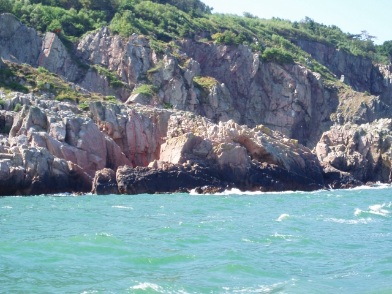

Lat: 56.29977711792564 Long: 12.459869384765625
[[Bild:Finger Jam M.PalgrenLÅG.jpg|thumb|300px|Micke Palmgren klättrar kullenklassikern nummer 1!
grad 6- på Karstens ränna
Copyright:
Fredrik Rapp
]]
Kullaberg är en halvö i Skånes nordvästra hörn. På nord- och sydkusten finns ett femtiotal klippor med mer än 800 leder. Huvudsakligen klättrar man här kilsäkrade leder i registret 2-6. Det finns även välsäkrade sportklätterleder upp till grad 8.
Kullabergs fina natur och närheten till havet gör området speciellt attraktivt. Kom ihåg att området är ett naturreservat - du är själv skyldig att ta reda på de regler som gäller.
De klippor och leder som redovisas här utgör endast ett litet urval av de klättermöjligheter som finns på Kullaberg, En komplett förare (från 1999) finns att köpa i kiosken vid fyren längst ut på halvön (den svenska föraren är bara ett urplock av de bästa klipporna, medan den danska föraren är komplett).
Speciellt lönande klippor att besöka är:
Det kan påpekas att frostsprängningen gör en del skada på klipporna varje vinter, speciellt på Kullabergs nordsida. Därför uppmanas besökare att se upp med lösa block och stenslag. Hjälm rekommenderas starkt.
Side med beskrivelser af næsten alle router på Kullen.
Karta med bilder på olika leder:
Diverse uppdateringar:
(informationen vil ikke blive opdateret den overgår til kullaberg.dk)
För allmän information:
OK, här följer förmaningar och de är allvarligt menade:
Det är inte självklart att vi ska få klättra obegränsat på Kullaberg.
Mycket trevlig liten klippa, precis bakom Åkersberget.
Fyrens parkeringsplats
Följ beskrivningen till Åkersberget. Precis innan så tar man av åt höger och tar sig ner i viken bakom. Grottorna är vända mot söder.
Ett mycket populärt solskensområde på sydkusten. Ett av de få områden som har en fin strand med inbjudande gräsplätt. Perfekt picknickplats för familjen. Mittemot huvudväggen finns 2 slabbar med lätt klättring. Speciellt den vänstra slabben är bra för barnen och nybörjare. Ut mot havet finns även fin bouldering. Snorklingen i bukten är att rekommendera. Nordsidan av åkersberget (ej med pa skissan) har en klassisk tradled: "Klassisk 4" grad 4.
Fyrens parkeringsplats
Starta vid kiosken nedanför fyren, följ den vältrampade stigen ner mot sydkusten. Håll till vänster när skogen öppnar sig och stigen delar sig (kliv inte över staketet – då kommer du antingen tillbaka till parkeringen eller följer röda slingan till Mölle). Du ser snart åkersberget ute mot havet.
Huvudsakligen trad-klättring i grad 2-7. Franska Trick är en klassisk sport-tur.
Väldigt populärt nybörjarställe. Kan bli väldigt varmt redan tidigt på våren eftersom ravinen där väggen är, ligger i rakt sydlig riktning.
Fyrens parkeringsplats
Stora Björn ligger på Kullabergs sydkust mellan åkersberget och Testöverhänget. Klippan är snarare för Kullabergsentusiaster än för förstagångsbesökaren.
Parkera vid Fyrens parkeringsplats.
Klippan är sydostvänd och nås bäst genom att gå ner i Björnviken till havet – sen ser man klippan uppe till höger.
Kilsäkrade leder där små friends är nödvändiga. Nedfirning från toppen på lederna.
Klippans kvalitet är bättre än den ser ut. Foto: Copyright T.Winther.

Från vänster till höger.

Kullabergs mest populära klippa. Ett besök här är ett måste för förstagångsbesökaren på Kullaberg. Klassiker som Fingerjam, Svenskeruten och Töbrud bjuder på fin tradklättring i de lättare graderna från 3-6. Här finns även enstaka turer kring grad 7, men ingen sportklättring. Kilracken ska med och du måste behärska konsten.
Parkera vid Kullagårdens Värdshus parkeringsplats.
Starta ifrån Kullagårdens parkering och gå mot fyren ca 100 meter. Sväng vänster på grusvägen som korsar golfbanan. Följ grusvägen och när den svänger mot vänster, ta höger i korsningen. Gå över viltstaketet (trappa) och följ kuststigen. Följ en otydlig stig som går mot söder över en höjd och genom ett enbuskage. Gå ut på ryggen och följ stigen ner vänster. Följ sedan den blockränna du har framför dig ner mot vattnet. Nu har du den östvända klippan på din högra sida.
Huvudsakligen trad-klättring i grad 2-6.


K2-klippan bjuder på mycket kvalitetsklättring i de lägre graderna. Sedan länge ett favoritställe för nybörjare. Ett par utmaningar för mer erfarna klättrare finns också. K2 har en fikaplats i bästa utsiktsläge över hav och klippor. Här beskrivs endast leder på den nedre väggen. Stora väggen har leder upp till 2 replängder.
Parkera vid Kullagårdens Värdshus parkeringsplats.
Gå igenom Kullagårdens privata parkering upp till den första utslagsplatsen. Följ golfbanan i högra kanten 700 m söderut mot havet (sista biten längs en gärdsgård). När skogen öppnar sig följer man stigen t h mot sydväst ca 150m tills K2:s östvända vägg tydligt ses nere vid vattnet i en stor dalsänka.
Traditionell klättring. Fullt rack nödvändigt.
Från vänster till höger.
Här finns ett par av Kullabergs bästa grad 6 väggklättringsleder. Ryktet säger att ytterligare nyturer kompletterar området, men vi väntar på mer info. Det kan vara bökigt att hitta klippan som förstagångsbesökare.
Parkeringen vid Josefinelust.
Från parkeringen vid Josefinelust först ned mot kusten tills trappan ner mot Josefinelust börjar och sedan österut över bäcken och uppför en backe, sen följs röda slingan ytterligare cirka 600 meter till ett dött träd som ligger över stigen. Däifrån tväras diagonalt 45 grader mot kusten österut cirka 250 meter till man kan se väggen nedanför nedstigningsravinen. Detta är inget lätt ställe att hitta!
Sport.
Ett urval av de cirka 10 leder som finns här. OBS dessa leder är långa, 50 meter rep räcker ej dubbelt ner.
[[Bild:Gubbamalen.jpg|frame|right|Copyright
Magnus Nilsson
/äventyrsskolan AC]] Kullabergs kanske bästa sportklätterklippa. Här finns klassiker som Lynet, Freak Brothers och Deja Vu. Området bjuder även på en hel del klättring runtomkring huvudklippan som beskrivs nedan.
Parkera vid Kullagårdens Värdshus parkeringsplats.
Från den östligaste sidan av Kullagårdens parkering följs vandringsleden röda slingan förbi den röda stugan, förbi Ablahamnstigen (som leder ner till kusten) och cirka 500m österut till en tydlig stig åt vänster ned mot stranden i en sänka. Under sommaren luktar det tydligt av lök här! Stigen leder via trappor ner till malen (stranden) där man viker av åt väster för att hitta klipporna. Den nedan beskrivna klippan ligger ungefär 150m västerut längs stranden.
Sport huvudsakligen. även en del trad- och mixleder.
Ett urval av de 15 leder som finns här:
Lederna ligger mellan Hästahovmalen och Blå Mal vid havet. Lederna är snarast för Kullabergsentusiasten.
Parkera vid Kullagårdens Värdshus parkeringsplats.
Gå ner till Blå Mal, sen gå över ryggen mot öster och ner till havet efter den djupt inskurna viken och innan den egentliga Hästahovmalen. Klippan är nordvänd och har sol på sommarförmiddagar. Området är även bra för traverser längs havet riktning väst.
Kilsäkrade leder där små friends är nödvändiga. Bra möjligheter för kilankare på toppen.
Klippan är strukturerad. (Pa bilden kan man se de 2 lederna vid havet och ovanför är leden "Brilliant Disguise" vid nedstigningen till Bla Mal inritad.)
Från vänster till höger.
[[Bild:Harlekin_4.jpg|thumb|right|150px|Torbjörn Winther, förstabestigningen av
Copyright:
Torbjörn Winther
]] En av Kullabergs mest klassiska klippor. En stor vägg med 2-replängdersleder. Storslagen atmosfär.
Parkera vid Kullagårdens Värdshus parkeringsplats.
Från den stora parkeringen vid Kullagården följs stig och skyltning mot visitgrottan (kuststigen västerut). Strax innan stigen går ner mot kustklipporna ansluter en liten stig från vänster. Följ denna stig 150m tills den stora sänkan, med den östvända väggen, kan ses ifrån en av de mot kusten utskjutande ryggarna.
Huvudsakligen trad-klättring av hög kvalitet, men även ett par sportturer.
[[Bild:Vandflyver_2.jpg|frame|left|Copyright:
Magnus Nilsson
/äventyrsskolan AC]]

En av de bästa klipporna på Kullaberg. Huvudsakligen trad-klättring, men även ett par mix- och en sporttur. Klippan lämpar sig väl för topprepning, och är en favorit bland aid-klättrarna. Var vänlig använd inte bladbultar/hammare vid teknisk klättring.
Parkera vid Fyrens parkeringsplats.
Vid den yttersta parkeringen finns en liten picnic-plats brevid en stor informationsskylt. rakt ut mot havet härifrån går en liten stig som viker av åt vänster, följ den och ta sedan en annan stig neråt höger efter 20 meter. Snart står du på toppen av klippan.
Huvudsakligen trad-klättring av hög kvalitet, men även ett par sportturer.
`
`
` |}
Kategori:trad
Kategori:sva
Kategori:vertikalt
Kategori:Skåne
Copyright (C) Permission is granted to copy, distribute and/or modify this document under the terms of the GNU Free Documentation License, Version 1.3